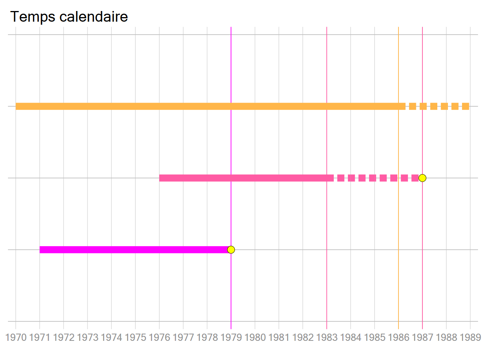
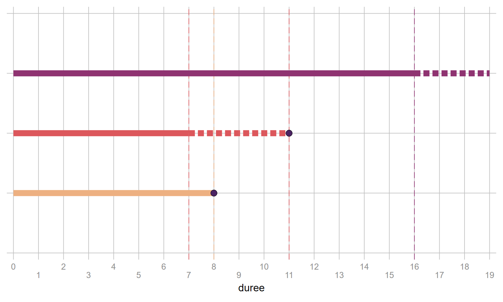
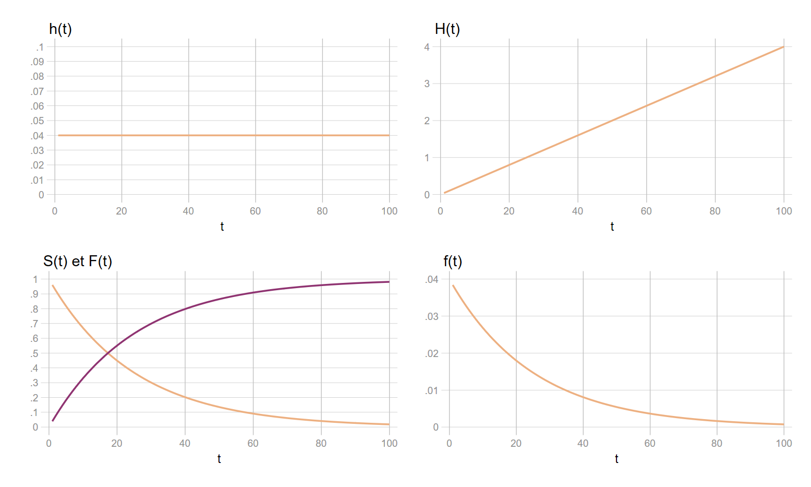

Théorie
L’analyse des durées peut être vue comme l’étude d’une variable aléatoire \(T\) qui décrit le temps d’attente jusqu’à l’occurence d’un évènement.
- La durée \(T=0\) est le début de l’exposition au risque (entrée dans le Risk set).
- \(T\) est une mesure non négative de la durée.
La principale caractéristique de l’analyse des durées est le traitement des informations dites censurées, lorsque la durée d’observation est plus courte que la durée d’exposition au risque.
1 Temps et durée
Le temps est une dimension (la quatrième), la durée est sa mesure. La durée est tout simplement calculer par la différence, pour une échelle temporelle donnée, entre la fin et le début d’une période d’exposition ou d’observation.
On distingue généralement deux types de durée : la durée continue et la durée discrète (groupée). Ces deux notions ne possèdent pas réellement de définition, la différence s’explique plutôt par la présence ou non de simultanéité dans l’occurrence des évènements. Le temps étant intrasèquement continu car deux évènements ne peuvent pas avoir lieu en « même temps ». C’est donc l’échelle temporelle choisie ou imposée par l’analyse et les données qui pourra rendre cette mesure continue ou discrète/groupée.
Pour un physicien travaillant sur la théorie de la relativité avec des horloges atomiques, une minute (voire une seconde) est une mesure très discrète pour ne pas dire grossière du temps, alors que pour un géologue c’est une mesure continue. Pour ces deux disciplines, cette échelle de mesure n’est pas adaptée à leur activité. Le choix de l’échelle temporelle doit être pertinent par rapport aux objectifs de l’analyse.
Il existe des situations où les durées sont par nature discrète, lorsqu’un évènement ne peut avoir lieu qu’à un moment précis. Généralement dans les sciences sociales avec un recueil de données de type rétrospectif, les mesures discrètes sont plutôt de nature groupées. Pour une même année, on considèrera indifféremment des évènements qui se produiront un premier janvier et un 31 décembre d’une même année.
A retenir
Durée continue : absence (ou très peu) d’évènements simultanés.
Durée discrète/groupée : présence d’évènements simultanés (en grand nombre).
2 Le Risk Set
- Il s’agit de la population “soumise” ou “exposée” au risque lorsque \(T=t_i\).
- Cette population varie dans le temps car:
- Certaines personnes ont connu l’évènement, donc peuvent ne plus être soumises au risque (ex: décès si on analyse la mortalité).
- Certaines personnes sortent de l’observation sans avoir (encore) observé l’évènement: décès si on analyse un autre type d’évènement, perdu.e.s de vue, fin de l’observation à une durée peu avancée dans un recueil rétrospectif.
Exemples:
* Les individus célibataires sont soumis au risque ……[remplir]
Les individus mariés sont soumis au risque …………[remplir]
Les individus au chômage sont soumis au risque ……..[remplir]
Les individus qui travaillent sont soumis au risque …[remplir]
Les individus vivants sont soumis au risque ………..[remplir]
3 La Censure
Une observation est dite censurée lorsque la durée d’observation est inférieure à la durée d’exposition au risque.
3.1 Censure à droite
Définition
Certains individus n’auront pas (encore) connu l’évènement à la date de l’enquête après une certaine durée d’exposition. On a donc besoin d’un marqueur permettant de déterminer que les individus n’ont pas observé l’évènement sur la période d’étude.
Pourquoi une information est-elle censurée (à droite)?
- Fin de l’étude, date de l’enquête.
- Perdu de vue, décès si autre évènement étudié.
En pratique (important)
- Ne pas exclure ces observations, sinon on surestime la survenue de l’évènement.
- Ne pas les considérer a-priori comme sorties de l’exposition sans avoir connu l’évènement. Elles peuvent connaître l’évènement après la date de l’enquête ou en étant perdues de vue. Sinon on sous-estime la durée moyenne de survenue de l’évènement.
Exemple
On effectue une enquête auprès de femmes : On souhaite mesurer l’âge à la première naissance. Au moment de l’enquête, une femme est âgée de 29 ans n’a pas (encore) d’enfant.
Cette information sera dite «censurée».
Elle est clairement encore soumise au risque après la date de l’enquête. Au niveau de l’analyse, elle sera soumise au risque à partir de ses premières règles jusqu’au moment de l’enquête.
Hypothèse fondamentale
Les observations censurées ont vis à vis du phénomène observé le même comportement que les observations non censurées. On dit que la censure est non informative. Elle ne dépend pas de l’évènement analysé. Normalement le problème ne se pose pas dans les recueil retrospectif.
Problème posé par la censure informative
Par exemple en analysant des décès avec un recueil prospectif, si un individu est perdu de vue en raison d’une dégradation de son état de santé, l’indépendance entre la cause de la censure et le décès ne peut plus être assurée.
A l’Ined l’exploitation du registre des personnes atteintes de mucoviscidose (G.Bellis) donne une autre illustration de ce phénomène. Chaque année un nombre significatif personnes sortent du registre (pas de résultats aux examens annuels). Si certain.e.s perdu.e.s de vue s’expliquent par des déménagements, émigration ou par un simple problème d’enregistrement des informations, on note qu’ils/elles sont nombreu.se.s à présenter une forme « légère » de la maladie. L’information pouvant être donnée ici par la mutation du gène. Comme il n’est pas recommandé de supprimer ou de traiter ces observations comme des censures à droite non informative, on peut les appréhender comme un risque concurrent au décès ou à tout autre évènement analysé à partir de ce registre (voir section dédiée).
Les graphiques suivant représentent, en temps calendaire et après sa transformation en durée, la logique des censures à droite. Le recueil des informations est ici de nature prospectives.
- Trait plein : durée observée
- Pointillés : durée censurés
- Bulle : moment de l’évènement


3.2 Censure à gauche, troncature et censure par intervalle
Censure à gauche
L’évènement s’est produit avant le début période d’observation. Typique des données prospectives, de type registre, avec des âges d’inclusion différenciés.
Censure par intervalle Un évènement peut avoir lieux entre 2 temps d’observations sans qu’on puisse les observer (ex: en criminologie récidive d’un delit entre deux arrestations). Un phénomène de censure à droite avec perdu.e de vue peut se transformer en censure par intervalle lorsque la personne réapparait et est de nouveau incluse dans les données.
Troncature
Par l’exemple, on analyse la survie d’une population. Seule la survie des individus vivants à l’inclusion peut être analysée (troncature à gauche). On peut également trouver un phénomène de troncature lorsqu’on mesure la durée à partir ou jusqu’à un certain seuil niveau.
Ces situations sont généralement plutôt bien contrôlées dans les recueils rétrospectifs. Elles sont assez courantes lorsque le recueil est de type prospectif.
Durée d’observation supérieure à la durée d’exposition
A l’inverse des individus peuvent sortir de l’exposition avant la fin de la période d’observation, et il convient donc de corriger la durée de cette sortie.
Un exemple simple : si au moment de l’enquête une femme sans enfant a 70 ans, cela n’a pas de sens de continuer de l’exposer au risque au-delà d’un certain âge. Si on ne dispose pas d’information sur l’âge à la ménopause on peut tronquer la durée un peu au-delà de l’âge le plus élevé à la première naissance observée dans les données.
4 Les grandeurs
4.1 Les grandeurs utilisées
La fonction de survie \(S(t)\)
La fonction de répartition \(F(t)\)
La fonction de densité \(f(t)\)
Le risque “instantané” \(h(t)\)
Le risque “instantané” cumulé \(H(t)\)
Remarques:
- Toutes ces grandeurs sont mathématiquement liées les unes par rapport aux autres. En connaître une permet d’obtenir les autres.
- Au niveau formel on se placera ici du point de vue où la durée mesurée est strictement continue. Cela se traduit, entre autre, par l’absence d’évènements dits “simultanés”.
- Les expressions qui vont suivre ne sont pas des techniques de calcul, mais des grandeurs dont on précisera seulement les propriétés.
4.2 La fonction de Survie \(S(t)\)
Dans ce type d’analyse, il est courant d’analyser la courbe de survie (ou de séjour).
La fonction de survie donne la proportion de la population qui n’a pas encore connue l’évènement après une certaine durée \(t\). Elle y a “survécu”.
Formellement, la fonction de survie est la probabilité de survivre au-delà de \(t\), soit:
\[S(t) = P(T>t)\]
Propriétés: \(S(0)=1\) et \(\lim\limits_{t\to{\propto}}S(t)=0\)
La fonction de survie est strictement non croissante.
4.3 La fonction de répartition \(F(t)\)
C’est la probabilité de connaitre l’évènement jusqu’en \(t\), soit:
\[F(t)=P(T\leq{t})\]
\(t\geq{0}\) Soit \(F(t) = 1 - S(t)\)
La fonction de survie et la fonction de répartition sont deux grandeurs strictement complémentaires.
Propriétés: \(F(0)=0\) et \(\lim\limits_{t\to{\propto}}F(t)=1\)
4.4 La fonction de densité \(f(t)\)
- Pour une valeur de \(t\) donnée, la fonction de densité de l’évènement donne la distribution des moments où les évènement ont eu lieu. Elle est donnée dans un premier temps par la probabilité de connaitre l’évènement dans un petit intervalle de temps \(dt\). Si \(dt\) est proche de 0 (temps continu) alors cette probabilité tend également vers 0. On norme donc cette probabilité par \(dt\). Rappel: on est toujours ici dans la théorie.
- En temps continu, la fonction de densité est donnée par la dérivée de la fonction de répartition: \(f(t)=F'(t)=-S'(t)\).
Formellement la fonction de densité \(f(t)\) s’écrit:
\[f(t)=\frac{P(t\leq{T}< t + dt)}{dt}\]
4.5 Le risque instantané \(h(t)\)
Concept fondamental de l’analyse des durées:
\[h(t)=\frac{P(t\leq{T}< t + dt | T\geq{t})}{dt}\]
- \(P(t\leq{T}< t + dt | T\geq{t})\) donne la probabilité de survenue de l’évènement sur l’intervalle \([t,t+dt[\) conditionnellement à la survie au temps \(t\).
- La quantité obtenue donne alors un nombre moyen d’évènements que connaîtrait un individu durant une unité de temps choisie.
- A priori cette quantité n’est pas une probabilité. C’est la nature de l’évènement, en particulier sa non récurrence, et la métrique temporelle choisie ou disponible qui peut la rendre assimilable à une probabilité. Tout comme la densité, on est plutôt dans la définition d’un taux (d’où l’expression hazard rate en anglais).
On peut écrire également: \(h(t)=\frac{f(t)}{S(t)}=\frac{F'(t)}{S(t)}=-\frac{S'(t)}{S(t)}\)
On voit ici clairement que la fonction de risque n’est pas une probabilité : \(\frac{f(t)}{S(t)}\) ne peut pas contraindre la valeur à ne pas être supérieure à 1.
4.6 Le risque cumulé \(H(t)\)
Le risque cumulé est égal à : \(H(t)=\int_{0}^{t} h(u)du = -log(S(t))\)
On peut alors le réécrire toutes les autres quantités:
- \(S(t)=e^{-H(t)}\)
- \(F(t)=1-e^{-H(t)}\)
- \(f(t)=h(t)\times{e^{-H(t)}}\)
Exemple Si on pose que le risque est strictement constant au cours du temps: \(h(t)=a\) (on parle de loi exponentielle - cf partie sur les modèles AFT - typique des processus sans mémoire comme la durée de vie des ampoules):
- \(h(t)=a\)
- \(H(t)=a\times{t}\)
- \(S(t)=e^{-a\times{t}}\)
- \(F(t)=1-e^{-a\times{t}}\)
- \(f(t)=a\times{e^{-a\times{t}}}\)

Application: risque et échelles temporelles:
Fortement inspiré, pour ne pas dire copié, de l’excellent cours de Gilbert Colletaz: https://www.univ-orleans.fr/deg/masters/ESA/GC/sources/Econometrie%20des%20Donnees%20de%20Survie.pdf
Attention on sort ici très clairement du temps continu, il s’agit seulement de manipuler les concepts, et de voir la dépendance de la mesure du risque à l’échelle temporelle choisie/disponible. Par ailleurs on inverse plutôt la logique de « l’instantanéité » en augmentant les intervalles de durée (du mois au trimestre ou à l’année).
Durant les mois d’hiver, entre le 1er janvier et le 1er avril (3 mois), la probabilité d’attraper un rhume chaque mois est de 48% (il s’agit bien d’un risque). Quelle est le risque d’attraper le rhume durant la saison froide?
\(\frac{0.48}{1/3}=1.44\). On peut donc s’attendre a attraper 1.44 rhume durant la période d’hiver.On passe une année en vacances dans une région où la probabilité de décéder chaque mois est évaluée à 33%. Quelle est le risque de décéder pendant cette année sabbatique? \(\frac{0.33}{1/12}=3.96\)
Le risque peut donc être supérieur à 1 (c’est donc plutôt un taux tel qu’on le défini généralement). En soit cela ne pose pas de problème comme il s’agit d’un nombre moyen d’évènements espérés (exemple: “taux” de fécondité), mais pour des évènements qui ne peuvent pas se répéter, évènements dits “absorbants”, l’interprétation n’est pas très intuitive.
On peut donc prendre l’inverse du risque qui mesure la durée moyenne (espérée) jusqu’à l’occurence de l’évènement.
On retrouve donc un concept classique en analyse démographique comme l’espérance de vie (survie): la question n’est pas de savoir si “on” va mourir ou non, le risque indépendement du temps étant par définition égal à 1, mais jusqu’à quand on peut espérer survivre.
- Pour le rhume, la durée moyenne est de \(1/1.44=0.69\) du trimestre hivernal, soit approximativement le début du mois de mars. - Pour l’année sabbatique, la durée moyenne de survie (l’espérance de vie) est de \(1/3.96=0.25\) d’une année soit 3 mois après l’arrivée dans la région.
Exercice
- On a une population de 100 cochons d’Inde.
- On analyse leur mortalité (naturelle).
- Ici l’analyse est en temps discret.
- La durée représente le nombre d’année de vie.
- Il n’y a pas de censure à droite.
A quel âge le risque de mourir des cochons d’Inde est-il le plus élevé? Quelle est la valeur de ce risque?
5 Compléments
5.1 Forme des fonctions de survie
Une des propriétés de la fonction de survie ou de séjour est qu’elles tendent vers 0. A la lecture du graphique suivant, cela peut correspondre à la forme de la courbe S2, bien que le % de survivant tend à baisser de moins en moins à mesure que la durée augmente. Deux cas limites doivent être considéré.

- La survie tombe à 0 très/trop rapidement (courbe S3): il n’y a donc pas ou presque pas de durée (par exemple presque tout l’échantillon observe l’évènement la première année de l’exposition). Les méthodes en temps continue ne sont a priori pas adaptées à ce genre de situation. Si on dispose d’une information plus fine pour dater les évènements, la fonction de séjour pourra reprendre une forme plus “standard”. Dans le graphique, \(S(t=1)=0.4\) , \(S(t=2)=0.025\), mais si on dispose par exemple de 10 points d’observations supplémentaires dans chaque durée groupée:

- Très peu d’évènements et la fonction de séjour suit une asymptote nettement supérieur à 0 ( \(\lim\limits_{t\to{\propto}}S(t)=a\) avec \(a>0\)). La question est plus délicate car on interroge l’exposition au risque d’une partie de l’échantillon ou, dit autrement on peut penser qu’une fraction est immunisé au risque. Cette problématique est rapidement posée en fin de formation.
5.2 Absence de censures à droites
Les méthodes qui vont être présentées gèrent la présence de censures à droite. En leur absence, elle restent néanmoins parfaitement valables. L’absence de censure facilite certaines analyses, par exemple celles des fonctions de séjour où le calcul direct des durées moyennes est rendu possible.
5.3 Utilisation des pondérations
Une question assez récurrente concerne l’utilisation des poids de sondage dans les analyses de durées avec longueurs biographiques souvent assez longues. Appartenant à l’école du bon sens (Eva Levièvre), leur utilisation ne me semble pas recommandée voire à exclure sauf exceptions. En effet les pondérations sont générées au moment de l’enquête, alors que les évènements étudiés peuvent remonter dans un passé plus ou moins lointain pour une partie de la population analysée. Si on regarde de plus près, la création de poids longitudinaux ne résoudrait pas grand chose ,les pondérations devant être recalculées à chaque moment d’observation ou à chaque moment où des évènements se produisent. Par ailleurs on mélangerait à un instant donné des personnes issues de générations différentes ce qui rend impossible tout calage sur des caractéristiques d’un population. Supposons une personne âgée de 25 ans et un personne âgée de 70 ans au moment de l’enquête en 2022, avec un début d’observation à l’âge de 18 ans . A 20 ans (\(t=2\)), pour la première personne les caractéristiques de la population sont celles de 2017, pour celle de 70 ans celles de 1972. On fait comment??????